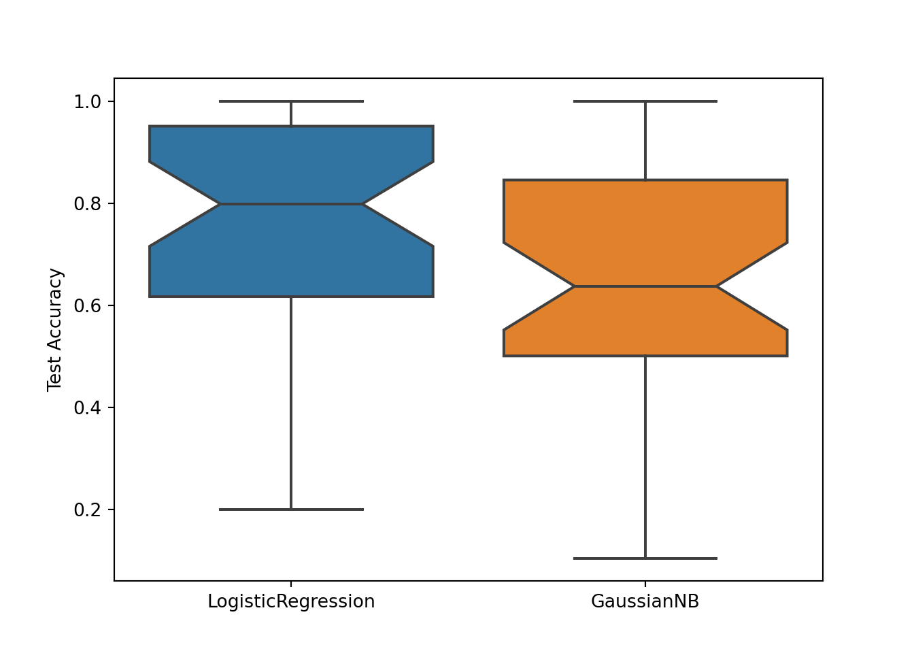

from pmlb import fetch_data
# Returns a pandas DataFrame
mushroom = fetch_data('mushroom')
mushroom.describe().transpose()## count mean std min 25% 50% 75% max
## cap-shape 8124.0 2.491876 0.901287 0.0 2.0 2.0 3.0 5.0
## cap-surface 8124.0 1.742984 1.179629 0.0 0.0 2.0 3.0 3.0
## cap-color 8124.0 4.323486 3.444391 0.0 0.0 3.0 8.0 9.0
## bruises? 8124.0 0.584441 0.492848 0.0 0.0 1.0 1.0 1.0
## odor 8124.0 4.788282 1.983678 0.0 4.0 6.0 6.0 8.0
## gill-attachment 8124.0 0.974151 0.158695 0.0 1.0 1.0 1.0 1.0
## gill-spacing 8124.0 0.161497 0.368011 0.0 0.0 0.0 0.0 1.0
## gill-size 8124.0 0.309207 0.462195 0.0 0.0 0.0 1.0 1.0
## gill-color 8124.0 4.729444 3.342402 0.0 2.0 4.0 7.0 11.0
## stalk-shape 8124.0 0.567208 0.495493 0.0 0.0 1.0 1.0 1.0
## stalk-root 8124.0 1.109798 1.061106 0.0 0.0 1.0 1.0 4.0
## stalk-surface-above-ring 8124.0 2.498277 0.814658 0.0 2.0 3.0 3.0 3.0
## stalk-surface-below-ring 8124.0 2.424914 0.870347 0.0 2.0 3.0 3.0 3.0
## stalk-color-above-ring 8124.0 5.446578 2.143900 0.0 5.0 7.0 7.0 8.0
## stalk-color-below-ring 8124.0 5.393402 2.194604 0.0 5.0 7.0 7.0 8.0
## veil-type 8124.0 0.000000 0.000000 0.0 0.0 0.0 0.0 0.0
## veil-color 8124.0 1.965534 0.242669 0.0 2.0 2.0 2.0 3.0
## ring-number 8124.0 1.069424 0.271064 0.0 1.0 1.0 1.0 2.0
## ring-type 8124.0 2.291974 1.801672 0.0 0.0 2.0 4.0 4.0
## spore-print-color 8124.0 3.062038 2.825308 0.0 1.0 3.0 7.0 8.0
## population 8124.0 3.644018 1.252082 0.0 3.0 4.0 4.0 5.0
## habitat 8124.0 3.221073 2.530692 0.0 0.0 3.0 6.0 6.0
## target 8124.0 0.482029 0.499708 0.0 0.0 0.0 1.0 1.0## (8124, 23)The fetch_data function has two additional parameters:
return_X_y (True/False): Whether to return the data in scikit-learn format, with the features and labels stored in separate NumPy arrays.
local_cache_dir (string): The directory on your local machine to store the data files so you don’t have to fetch them over the web again. By default, the wrapper does not use a local cache directory.
For example:
from pmlb import fetch_data
# Returns NumPy arrays
mushroom_X, mushroom_y = fetch_data('mushroom', return_X_y=True, local_cache_dir='../datasets')
mushroom_X.shape## (8124, 22)## (8124,)You can also list the available datasets as follows:
import random
from pmlb import dataset_names, classification_dataset_names, regression_dataset_names
rand_datasets = random.choices(dataset_names, k=7)
print('7 arbitrary datasets from PMLB:\n', '\n '.join(rand_datasets))## 7 arbitrary datasets from PMLB:
## kr_vs_kp
## 624_fri_c0_100_5
## 1196_BNG_pharynx
## 192_vineyard
## 706_sleuth_case1202
## 537_houses
## 529_pollenprint(
f'PMLB has {len(classification_dataset_names)} classification datasets '
f'and {len(regression_dataset_names)} regression datasets.'
)## PMLB has 162 classification datasets and 122 regression datasets.PMLB is designed to make it easy to benchmark machine learning algorithms against each other. Below is a Python code snippet showing the a sample comparison of two classification algorithms on the first 40 PMLB datasets.
from sklearn.linear_model import LogisticRegression
from sklearn.naive_bayes import GaussianNB
from sklearn.model_selection import train_test_split
import matplotlib.pyplot as plt
import seaborn as sb
from pmlb import fetch_data, classification_dataset_names
logit_test_scores = []
gnb_test_scores = []
for classification_dataset in classification_dataset_names[:40]:
# Read in the datasets and split them into training/testing
X, y = fetch_data(classification_dataset, return_X_y=True)
train_X, test_X, train_y, test_y = train_test_split(X, y)
# Fit two sklearn algorithms:
# Logistic regression and Gaussian Naive Bayes
logit = LogisticRegression()
gnb = GaussianNB()
logit.fit(train_X, train_y)
gnb.fit(train_X, train_y)
# Log the performance score on the test set
logit_test_scores.append(logit.score(test_X, test_y))
gnb_test_scores.append(gnb.score(test_X, test_y))# Visualize the result:
sb.boxplot(data=[logit_test_scores, gnb_test_scores], notch=True)
plt.xticks([0, 1], ['LogisticRegression', 'GaussianNB'])## ([<matplotlib.axis.XTick object at 0x7f6b6bed43c8>, <matplotlib.axis.XTick object at 0x7f6b6beaad68>], [Text(0, 0, 'LogisticRegression'), Text(1, 0, 'GaussianNB')])